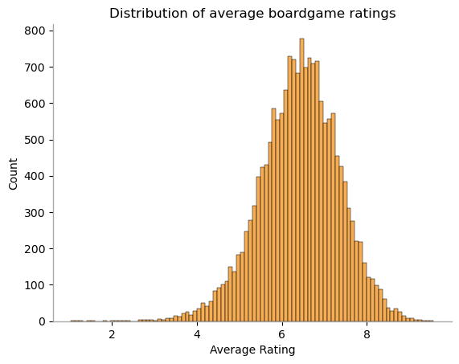

Home Advantage in Fantasy Premier League - Notebook
- Author: Julius Caesar
- Published: 58-49 BC
- Language: Latin
First, let's define some helpers.
We will use data from the Fantasy Premier League data project, which I downloaded previously. The data is stored season by season, so we have to combine seasons. Data on each player/gameweek (such as total points scored) are saved in merged_gw.csv. Player/gameweek data for 2016/17 through 2019/20 does not include player position data (e.g., defender, midfielder, etc.) Since we will need player position data later, we also merge merged_gw.csv with players_raw.csv (which does contain player position data) for seasons 2016/17 through 2019/20.
Gallia est omnis divisa in partes tres, quarum unam incolunt Belgae, aliam Aquitani, tertiam qui ipsorum lingua Celtae, nostra Galli appellantur. Hi omnes lingua, institutis, legibus inter se differunt. Gallos ab Aquitanis Garumna flumen, a Belgis Matrona et Sequana dividit. Horum omnium fortissimi sunt Belgae, propterea quod a cultu atque humanitate provinciae longissime absunt, minimeque ad eos mercatores saepe commeant atque ea quae ad effeminandos animos pertinent important, proximique sunt Germanis, qui trans Rhenum incolunt, quibuscum continenter bellum gerunt. Qua de causa Helvetii quoque reliquos Gallos virtute praecedunt, quod fere cotidianis proeliis cum Germanis contendunt, cum aut suis finibus eos prohibent aut ipsi in eorum finibus bellum gerunt. Eorum una, pars, quam Gallos obtinere dictum est, initium capit a flumine Rhodano, continetur Garumna flumine, Oceano, finibus Belgarum, attingit etiam ab Sequanis et Helvetiis flumen Rhenum, vergit ad septentriones. 6 Belgae ab extremis Galliae finibus oriuntur, pertinent ad inferiorem partem fluminis Rheni, spectant in septentrionem et orientem solem. Aquitania a Garumna flumine ad Pyrenaeos montes et eam partem Oceani quae est ad Hispaniam pertinet; spectat inter occasum solis et septentriones.
Apud Helvetios longe nobilissimus fuit et ditissimus Orgetorix. Is M. Messala, [et P.] M. Pisone consulibus regni cupiditate inductus coniurationem nobilitatis fecit et civitati persuasit ut de finibus suis cum omnibus copiis exirent: perfacile esse, cum virtute omnibus praestarent, totius Galliae imperio potiri. Id hoc facilius iis persuasit, quod undique loci natura Helvetii continentur: una ex parte flumine Rheno latissimo atque altissimo, qui agrum Helvetium a Germanis dividit; altera ex parte monte Iura altissimo, qui est inter Sequanos et Helvetios; tertia lacu Lemanno et flumine Rhodano, qui provinciam nostram ab Helvetiis dividit. His rebus fiebat ut et minus late vagarentur et minus facile finitimis bellum inferre possent; qua ex parte homines bellandi cupidi magno dolore adficiebantur. Pro multitudine autem hominum et pro gloria belli atque fortitudinis angustos se fines habere arbitrabantur, qui in longitudinem milia passuum CCXL, in latitudinem CLXXX patebant.